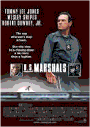
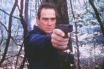
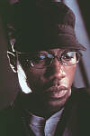

Contents | Features | Reviews | Books | Archives | Store |
 |
|
| Movie Credits | Buy It! |
U.S. Marshals
Review by Elias Savada
Posted 8 March 1998
|  | Directed by Stuart Baird Starring
Tommy Lee Jones, Wesley Snipes, Screenplay by John Pogue |
This technically efficient spin-off of The Fugitive is a mind-boggling letdown. Former editor Stuart Baird directs his second feature after his 1996 debut (Executive Decision) in paint-by-number fashion. Chase, cover-up crash, chase, cover-up, jump, chase. Combining set pieces and plotlines from ConAir (crash landing a convict airliner), The Peacemaker (foot-chasing around the U.N. headquarters in New York), and any Tarzan film (vine swinging – you’ve seen this one in the trailer), the action sequences are fine in their surgical precision, but the storyline lacks the excitement of its predecessor. The original escapee was a scared Dr. Richard Kimball (Harrison Ford), convincingly intelligent enough to search out his brutally murdered wife’s killer in the 1993 thriller. Wrongfully accused Mark Roberts (Wesley Snipes) is nowhere near as genuinely concerned for his well-being. He’s an emotionless "secret government operative" – i.e. urban Rambo – who obviously knows how to go head-to-head against the best federal agents and foreign spies. Swiss actress Irene Jacob (The Double Life of Veronique, Red) is wasted as Roberts’ love interest, who, when not serving capucchio at Starbucks, obediently rushes pell mell to New York to shop at Saks.
There are lots of small gaps in continuity and a big one large enough to drive a tank through. This faux-pas occurs about two-thirds of the way through the over two-hour film, when one of the underlings of Chief Deputy U.S. Marshal Sam Gerard (Tommy Lee Jones) is critically wounded by one of two men. As Gerard purposefully was not killed earlier by one of the combatants, it doesn’t take a screenwriting genius to figure out who the shooter is and what Sam’s reaction should be. I kept shaking my head in disbelief while the movie dragged on for another 30 minutes, through a shoot-out on a freighter and an unimaginative double-cross sequence in Roberts’ hospital room. Guess I should have expected something like this as the film is being released by Warner Bros., their market share continuing to plummet from a steady stream of boxoffice losers. Producers Arnold and Anne Kopelson have been key characters in perpetuating WB’s fall from grace with such bombs as Mad City, Devil’s Advocate, and Murder at 1600.
There will be no Oscar nominations here, either (The Fugitive garnered seven). Jones, who won for Best Supporting Actor, first appears as a costumed Chiko-Rama yellow-tighted chicken mascot during a stakeout that sets up his bad boy problem with authority (read Dirty Harry). He spends the rest of the movie trying to wipe the egg off his face and find the real culprits (read Dirty Harry, again). Jones is one of American’s great leading men, but I can hear the change purse jingling off to the side of the camera as the producers begged him to appear in this lesser effort. It’s a polished role, but not one as worthy as his best (in Coal Miner’s Daughter, JFK, and Men in Black on film and in The Executioner’s Song and Lonesome Dove on TV).
When the reluctant Gerard is forced to baby-sit a doomed flight transporting a bevy of social misfits in the unfriendly skies departing the windy city, he realizes the occupant of seat 10D (Snipes) isn’t Passenger 57. In the aftermath following the plane’s spectacular crash when an assassination attempt against Roberts goes awry, ruthless and annoying Federal Agent John Royce (Robert Downey, Jr.) is assigned to help the marshals track down the skillfully evasive Roberts. Gerard, aware that Roberts’ past is masked in secrecy but not so sure he is responsible for the murder of two diplomatic Secret Service attaches in the Big Apple, quickly realizes Royce and Roberts are cut from the same government mold and that mold smells rotten. It boils down to bad eggs at the U.S. Mission to the United Nations and some corrupt Chinese diplomats. Screenwriter John Pogue throws in everything but the kitchen sink. While the production notes lead off that he "is considered one of Hollywood’s most successful unproduced screenwriters," I suspect he may soon be one of the most unsuccessful produced screenwriters.
Contents | Features | Reviews | Books | Archives | Store
Copyright © 1999 by Nitrate Productions, Inc. All Rights Reserved.